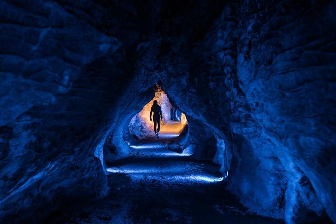
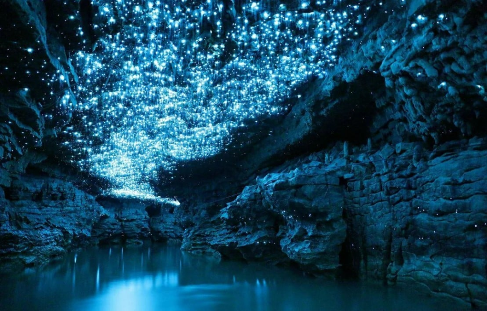
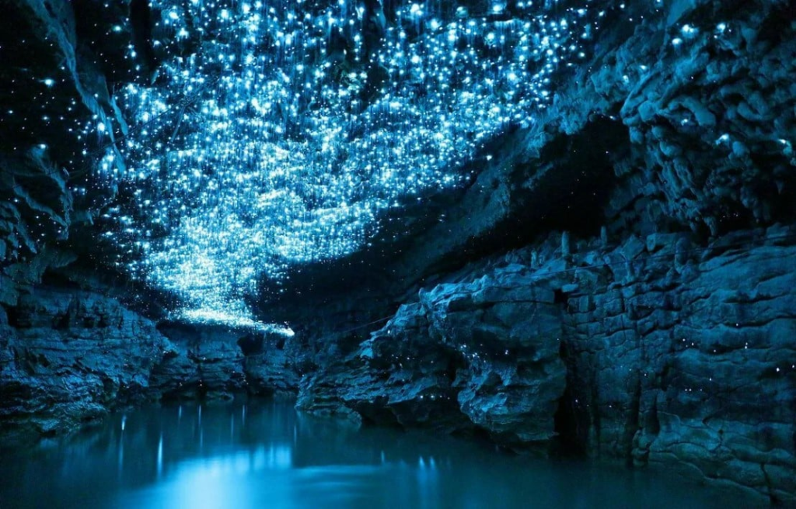
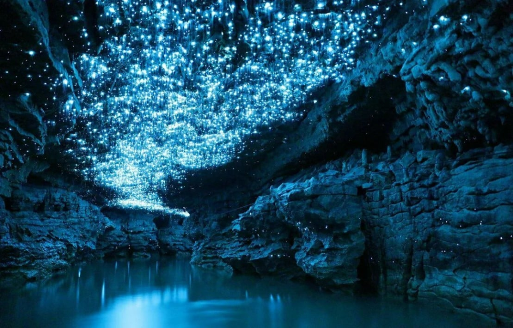
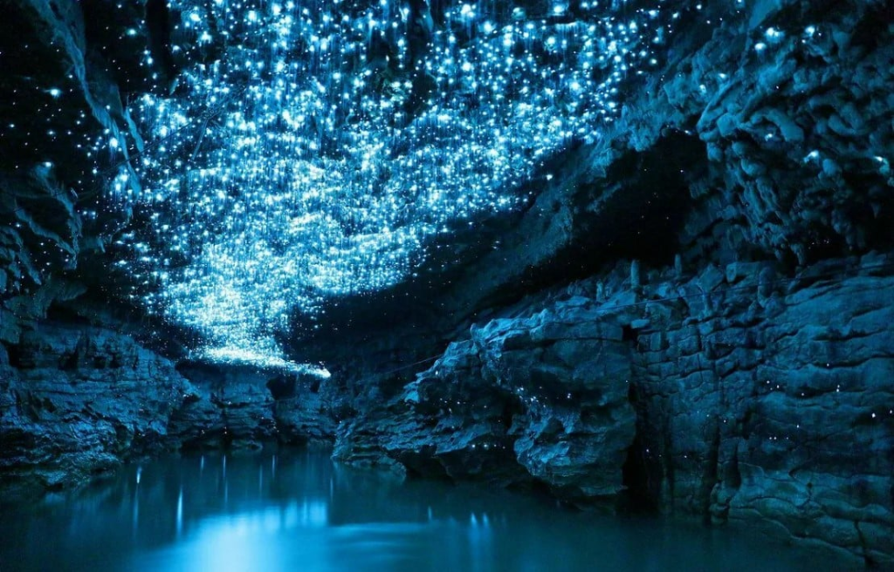

nosso espaço

 



Bebida feita com limão siciliano espremido na hora, hortelã fresca macerada e leve toque de maçã verde, finalizada com pérolas cintilantes comestíveis. Servida bem gelada, possui coloração esverdeada translúcida com pequenos pontos brilhantes que lembram as luzes naturais das cavernas de Waitomo. Refrescante e levemente ácida, é como uma poderosa poção de energia e renovação.
Preparada com limonada artesanal e concentrado natural de blueberry, essa bebida apresenta uma tonalidade azul intensa com reflexos prateados de glitter alimentício. Servida com gelo, é cítrica na medida certa, com um toque adocicado suave no final. Sua aparência lembra um frasco mágico iluminado pela lua
Combinação vibrante de morango, laranja e maracujá, levemente gaseificada para trazer sensação de efervescência. De coloração avermelhada intensa, é servida extremamente gelada e possui aroma frutado marcante. Seu sabor equilibra doçura e acidez, como uma poção criada para despertar bravura antes de uma grande batalha
Mistura tropical de abacaxi fresco, kiwi e água de coco, com folhas de hortelã para finalizar. De tom verde-claro natural, é servida gelada e possui textura leve e refrescante. O sabor é suave e equilibrado, remetendo à sensação de frescor ao atravessar uma floresta mística ao amanhecer.
Suco de uva integral encorpado, servido gelado e finalizado com uma delicada espuma cremosa de frutas vermelhas e leve toque de baunilha. Sua coloração roxa profunda contrasta com a camada clara no topo, criando o efeito visual de uma névoa mística. Doce, suave e envolvente, como uma bebida preparada para revelar visões do futuro.
Drink refinado preparado com gin, água tônica artesanal, fatias de limão siciliano e ramo de alecrim fresco. Servido em taça alta com bastante gelo, possui aparência translúcida e elegante. Aromático e levemente cítrico, transmite frescor e sofisticação — como uma lâmina lendária recém-forjada.
.Mistura intensa de vodka com frutas vermelhas maceradas e toque sutil de pimenta rosa. De coloração vermelha vibrante, é servido gelado e apresenta aroma frutado com leve picância no final. Seu sabor começa doce e termina com um calor suave, lembrando a chama controlada de uma criatura mítica
.Preparado com rum escuro, café encorpado e licor de chocolate, finalizado com espuma cremosa. De tonalidade marrom profunda, quase negra, é servido gelado e possui sabor intenso e marcante. A combinação de doce e amargo cria uma experiência envolvente, como uma bebida saída das sombras de uma antiga taverna
.Coquetel leve feito com espumante e licor de pêssego, decorado com frutas douradas. Sua coloração clara com reflexos rosados e dourados transmite elegância. Servido bem gelado, possui sabor delicado, levemente adocicado e refrescante — como uma celebração digna da realeza.
Drink azul vibrante feito com vodka, curaçau blue e suco de limão fresco, servido com efeito defumado apresentado à mesa. Gelado e levemente cítrico, possui aroma marcante e aparência enigmática. A fumaça que envolve o copo cria a sensação de estar abrindo um artefato mágico proibido
Chocolate quente cremoso preparado com cacau selecionado, leite vaporizado e especiarias suaves como canela e noz-moscada. Finalizado com marshmallows levemente tostados. Textura aveludada e aroma envolvente, perfeito para noites frias na taverna.
Café especial recém-passado, servido quente com toque de canela, chantilly artesanal e fio de caramelo. Equilibrado entre amargor e doçura, é ideal para quem precisa de foco e energia.
Infusão quente de ervas selecionadas e frutas secas, servida em bule individual. Aroma delicado e sabor reconfortante, perfeito para descansar após uma longa jornada.
Bebida gaseificada multicolorida com sabores frutados misturados e algodão doce no topo. Servida gelada, possui aparência vibrante e divertida, como um experimento mágico bem-sucedido.
Milkshake cremoso de baunilha com calda azul cintilante e biscoito artesanal. Textura espessa e suave, servido gelado, com aparência que lembra o céu noturno iluminado por estrelas.
Seleção especial de queijos variados, salames artesanais, azeitonas temperadas e pão rústico recém-aquecido. Servida em tábua de madeira, é perfeita para compartilhar entre companheiros de jornada. Sabores intensos e marcantes que remetem aos grandes banquetes das antigas tavernas.
Rolinhos dourados e crocantes recheados com frango temperado e cream cheese, fritos até atingirem textura perfeitamente crocante por fora e cremosa por dentro. Servidos quentes, são como pequenos pergaminhos recheados com segredos saborosos.
Discos de batata empanados e recheados com cheddar cremoso e bacon crocante. Servidos bem quentes, possuem exterior dourado e interior macio e saboroso, como escudos forjados para proteger qualquer aventureiro da fome.
Iscas de frango empanadas e temperadas com especiarias especiais da casa, servidas com molho levemente picante. Crocantes por fora e suculentas por dentro, trazem o calor e a intensidade de uma forja em pleno funcionamento.
Anéis de lula empanados e fritos até ficarem levemente dourados, acompanhados de molho cítrico artesanal. Textura macia e sabor suave do mar, combinados com crocância perfeita.
Costela suína assada lentamente por horas, envolta em molho barbecue artesanal levemente adocicado e defumado. Acompanha batatas rústicas e legumes salteados na manteiga. Um prato robusto, suculento e digno de um verdadeiro banquete real.
Filé mignon grelhado no ponto escolhido, finalizado com molho de ervas finas. Servido com arroz cremoso e vegetais salteados. Macio, suculento e equilibrado, representa força e elegância em cada corte.
Risoto cremoso de cogumelos frescos preparado lentamente, finalizado com parmesão e ervas aromáticas. Textura aveludada e sabor marcante, ideal para quem aprecia uma jornada gastronômica mais delicada e sofisticada.
Massa artesanal envolvida em molho de tomate rústico e temperos especiais da casa, acompanhada de almôndegas suculentas. Prato intenso e reconfortante, com sabor marcante e levemente encorpado.
Salmão grelhado com crosta de ervas, servido com purê de batata cremoso e legumes grelhados. Textura macia e sabor delicado, equilibrando frescor e sofisticação.
Hambúrguer artesanal suculento, coberto com queijo cheddar derretido e cebola caramelizada, servido no pão brioche macio com molho especial da casa. Acompanha batatas rústicas crocantes.
Hambúrguer artesanal com bacon crocante, queijo prato, alface fresca e molho defumado. Servido no pão levemente tostado, combina sabor intenso e textura equilibrada. Acompanha batatas rústicas.
Hambúrguer de grão-de-bico temperado com ervas finas, queijo derretido, rúcula fresca e molho especial no pão australiano. Opção leve e saborosa, acompanhada de batatas rústicas.
Brownie de chocolate intenso servido quente, acompanhado de sorvete de creme e calda de chocolate. Contraste perfeito entre quente e gelado, revelando um verdadeiro tesouro a cada colherada.
Cheesecake cremoso com base crocante, coberto com calda de frutas vermelhas levemente ácida. Textura suave e delicada, com apresentação elegante.
Mousse de maracujá leve e aerado, finalizado com crocante de chocolate. Equilíbrio entre acidez e doçura, criando uma sobremesa encantadora e refrescante.
Petit gâteau com exterior macio e interior cremoso de chocolate, servido com sorvete artesanal. Ao cortar, o recheio escorre como estrelas brilhando na escuridão.
Evento interativo com missões simbólicas, desafios e quizzes. Ideal para grupos que gostam de competição leve e diversão temática. de segunda a quarta das 19h as 22h
Espaço para cantar trilhas e aberturas marcantes, com palco decorado e iluminação especial. terça e quinta das 16h as 18h
Área com jogos de tabuleiro e desafios estratégicos, incentivando interação e entretenimento em grupo.
Espaço com cenários temáticos e acessórios para registrar momentos especiais.
Apresentações com atores caracterizados, tornando a experiência ainda mais imersiva. aos sabados das 14h as 16h
Sessão especial com narração de aventuras em ambiente intimista e mágico. segunda a sexta das 19h as 22:30h